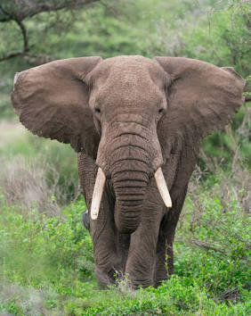
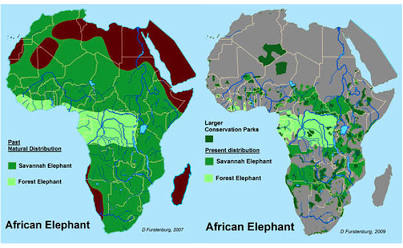
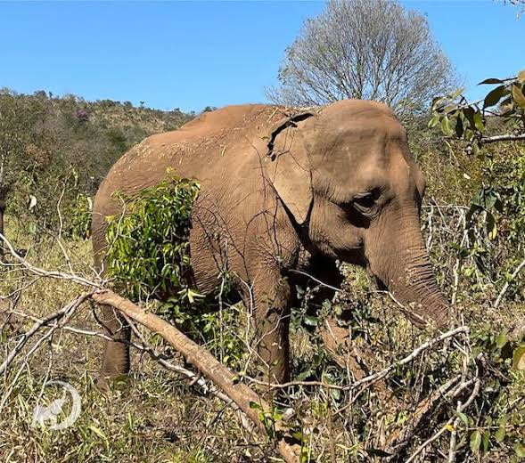
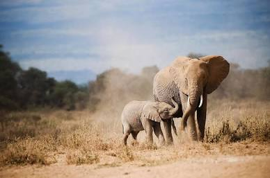
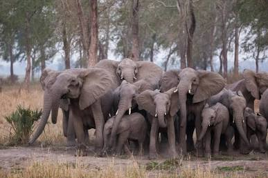
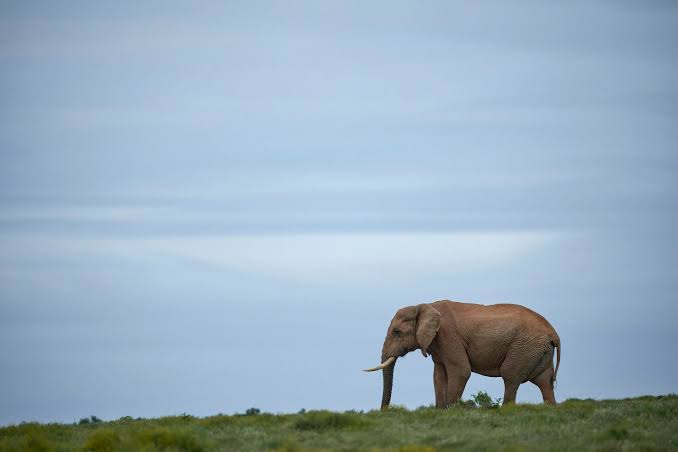

<!DOCTYPE html>
<html lang="en">
<head>
    <meta charset="UTF-8">
    <meta name="viewport" content="width=device-width, initial-scale=1.0">
    <title>African Elephant Dossier</title>
</head>
<body>
    
</body>
</html>

<header>
<h1>Species Page: African Elephant</h1>
</header>

<nav>
    <ul>
<li><a href="african-adventure.html">Home</a></li>
    </ul>
</nav>

<main>
    <article>
        <section id="basic-info">
            <h2>Scientific Information</h2>
            <p><strong>Common Name:</strong> African Savanna Elephant </p>
            <p><strong>Status/Conservation:</strong> Endangered <sup><a href="#ref1">[1]</a></sup></p>
            <section id="classification">
                <h2>Full Scientific Classification</h2>
                <table border="1">
                    <tr><th>Taxonomic Rank</th><th>Classification</th></tr>
                    <tr><td>Kingdom</td><td>Animalia</td></tr>
                    <tr><td>Phylum</td><td>Chordata</td></tr>
                    <tr><td>Subphylum</td><td>Vertebrata</td></tr>
                    <tr><td>Class</td><td>Mammalia</td></tr>
                    <tr><td>Subclass</td><td>Theria</td></tr>
                    <tr><td>Order</td><td>Proboscidea</td></tr>
                    <tr><td>Suborder</td><td>Elephantiformes</td></tr>
                    <tr><td>Family</td><td>Elephantidae</td></tr>
                    <tr><td>Genus</td><td>Loxodonta</td></tr>
                    <tr><td>Species</td><td>Loxodonta africana</td></tr>
                </table>
            </section>
         <section id="physical profile">
            <h2>Physical Profile</h2>
            <dl>
               <dt>Size range</dt>
               <dd> Shoulder height measures 10–13 feet (3–4 m), with a body length of 19.5–24.5 feet (6–7.5 m). </dd>

               <dt>Weight</dt>
               <dd> Males weigh 10,000–13,300 lbs (4,500–6,000 kg). Females are smaller, weighing 5,000–7,700 lbs (2,200–3,500 kg).</dd>
               <dt>Identification Markings</dt>
               <dd>Identification Markings: Thick, wrinkled grayish-brown skin with sparse hairs. They have massive ears shaped like the continent of Africa, a long muscular trunk with two finger-like tips, and curved ivory tusks present in both males and females.  
                <sup><a href="#ref2">[2]</a></sup></dd>
           </dl>
           
       </section>
       <section id="habitat-geography">
        <h2>Habitat & Geography</h2>
        <p>Habitats: Savannas, grasslands, woodlands, and dry scrublands.
            Distribution: Scattered across Sub-Saharan Africa, with major populations in Southern and Eastern Africa.</p>
<h3>Distribution Map</h3>

        </section>
<section id="ecology and behavior">
    <h2>Ecology and Behavior</h2>
<h3>Feeding and Diet</h3>
<p>Herbivores that consume up to 300–400 lbs of vegetation daily, feeding on grasses, tree bark, leaves, roots, and fruits.</p>
<ul>
    
</section>
<section id="communication and social behavior">
    <h2>Communication and Social Behavior</h2>
    <p>African elephants communicate through trumpets, rumbles, infrasound (low-frequency calls that travel miles through the ground), touch, and ear/trunk posture.</p>
    
</ol>
<h3>Life Cycle and Breeding Behaviors</h3>
                <p>They live in tight-knit matriarchal family herds led by the oldest female. Females have the longest gestation period of any mammal at 22 months, giving birth to a single calf.</p>
                
            
            
                <section id="Predators">
    <h2>Predators</h2>
    <p>Adult elephants have no natural predators due to their massive size, though lions, hyenas, and crocodiles may occasionally prey on young calves. Humans pose the greatest threat through ivory poaching and habitat fragmentation.</p>
    